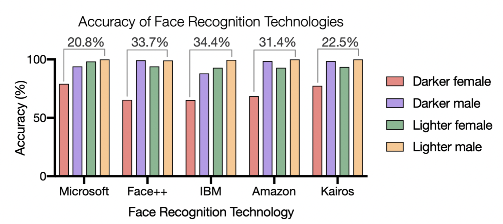

In 2022 Apple faced a lawsuit because their Apple Watch’s blood oxygen sensor could not properly read people of colours levels. This resulted in false readings for people of colour which may negatively impact their health. Wearers' blood oxygen levels are measured by a pulse oximeter which shines a light through their skin. By measuring the reflected colours, sensors estimate the user's blood oxygen level (Forbes). The suit describes, "reliance on pulse oximetry to triage patients and adjust supplemental oxygen levels may place Black patients at increased risk for hypoxaemia," and "since health care recommendations are based on readings of their blood oxygen levels, white patients are more able to obtain care than those with darker skin when faced with equally low blood oxygenation”. Forbes mentions that pulse oximeters have long been providing incorrect readings to people of colour, Hispanic people, and Asia people due to the technology's use of colour to provide readings. Link to Study
Facial Recognition technology, which is currently widely used in iPhones and other security softwares, is usually about 90% accurate. However, studies found that young black females, aged 18-30, have the lowest accuracy out of all demographic groups. Amazons facial recognition software, ReKognition, had a 31% failure rate for this demographic. It is important to note Amazon is currently marketing this software to law enforcement branches across the globe, which could worsen the already strained relationship between people of colour and law enforcement.
Harvard mentions, “the NYPD maintains a database of 42,000 “gang affiliates” – 99% Black and Latinx – with no requirements to prove suspected gang affiliation”. When we combine this knowledge with the fact that Amazon's facial recognition software fails 31% of the time for women of colour, think of how easily these women could be falsely accused of crimes!
Luckily, in 2020 about 1,000 experts in AI signed a letter condemning this kind of crime-predicting software, they described, “there is no way to develop a system that can predict or identify ‘criminality’ that is not racially biased — because the category of ‘criminality’ itself is racially biased.” Link to Letter
As is with most things I’ve mentioned thus far, this software bias is most likely a result of data missingness, that is, people of colour, more specifically women of colour, missing from studies, development groups, and the technology workforce. These softwares are made and trained by groups of humans, if these groups only contain 8% people of colour (which is the current statistic), think of all the data gaps there may be.